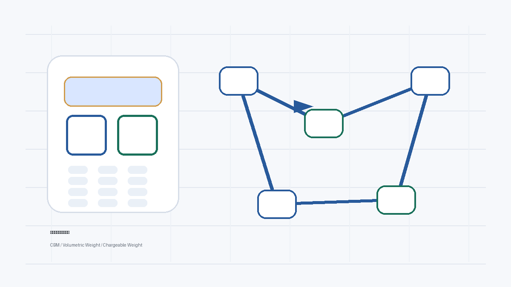

DHL 体积重 5000的复核要先回到外箱尺寸和实重。DHL 官方帮助页说明，体积重等于长 × 宽 × 高 ÷ 体积重分母，使用厘米和千克时标准分母为 5000，并与实际重量比较取较大值。工具计算只能帮助发现差异，最终发货仍应以官方报价工具、承运商或客服确认为准。
为什么要复核
DHL 报价常被新手拿来和空运、EMS 直接比每千克单价，但如果没有先按 5000 分母算计费重，单价对比就没有共同基础。
在跨境发货里，报价差异经常不是单价本身造成的，而是尺寸、重量、分母、进位、服务类型和附加项没有对齐。运营、仓库和货代如果使用不同口径，就会出现看似都正确、实际无法对账的情况。把这些字段先拆开，可以让沟通从“感觉不对”变成“哪一列需要确认”。
本文采用公开来源和保守口径整理，不把任何渠道规则写成永久不变的结论。DHL、EMS、顺丰等承运商会按照服务、目的地、货物属性和时间调整规则。你可以用本文方法建立内部复核表，但最终发货前仍要回到官方报价工具、客服确认或承运商书面说明。
核心方法
DHL 官方帮助页说明，体积重等于长 × 宽 × 高 ÷ 体积重分母，使用厘米和千克时标准分母为 5000，并与实际重量比较取较大值。复核时应按单箱外尺寸计算，再考虑多件货汇总。
一箱 60cm × 45cm × 40cm，实重 16kg。DHL 体积重为 21.6kg，因此报价复核应围绕 21.6kg 及其进位结果，而不是 16kg。
实际操作时建议保留三类记录：第一是原始测量数据，包括外箱长宽高、实重、箱数和测量日期；第二是计算数据，包括 CBM、体积重、计费重和分母；第三是确认数据，包括渠道名称、服务类型、进位方式、附加项和确认来源。三类数据分开保存，后续出现差异时才能追溯。
可复制表格
下面的字段可以复制到表格工具中。录入字段由仓库或运营填写，计算字段用公式生成，确认字段由承运商或货代回复后补充。
| 箱号 | 长宽高 | 实重 | DHL 体积重 | 复核计费重 | 待确认进位 |
|---|---|---|---|---|---|
| 待填写 | 待填写 | 待填写 | 待填写 | 待填写 | 待填写 |
| 示例：一箱 60cm × 45cm × 40cm，实重 16kg。DHL 体积重为 21.6kg，因此报价复核应围绕 21.6kg 及其进位结果，而不是 16kg。 | |||||
复核问题：DHL 体积重 5000
当前货物：请填写 SKU、箱数、外箱尺寸和实重
需要确认：分母、计泡阈值、进位方式、附加项、目的地限制
输出格式：请按箱号列出体积重、计费重、异常提醒和待确认问题执行清单
- 确认箱规是厘米。
- 用 5000 分母算每箱体积重。
- 与实重取较大值。
- 问清进位单位。
- 把结果和 DHL 报价逐项核对。
执行清单的重点是让每一步都有可检查的结果。比如“确认箱规”不够具体，应写成“封箱后测量每箱长宽高并拍照”；“问货代”也不够具体，应写成“确认该渠道使用的体积重分母、计费重进位和是否逐箱计算”。
常见误区
- 只比较 DHL 每千克单价。
- 用 6000 分母估算 DHL。
- 多箱货只算平均尺寸。
- 不确认目的地和服务附加条件。
这些误区的共同点，是把物流复核当成一次性心算。更稳的做法是让所有字段进入同一张表，并且标明来源。只要某个字段来自经验、聊天记录或旧报价，就应该标为待确认，而不是直接进入最终方案。
规则边界
本站不承诺固定节省金额，也不替代承运商报价。体积重、CBM 和计费重只是复核入口，真实发货还会受到目的地、货物属性、包装状态、通关资料、派送方式、旺季安排和承运商更新影响。任何涉及具体金额和服务承诺的决定，都应以官方页面、报价工具或承运商确认为准。
FAQ
DHL 体积重 5000可以直接决定选哪个渠道吗？
不建议直接决定。计算结果只能说明体积重、实重和分母带来的差异，还要结合目的地、时效、货物属性、尺寸限制、进位方式和承运商确认口径。
如果报价单和我算的DHL 体积重 5000不一致怎么办？
先核对单位、外箱尺寸、箱数、分母、进位和是否逐箱计算，再把差异整理成问题发给承运商或货代确认。不要只问总额为什么不同。
这篇内容适合渠道规则复核场景吗？
适合做发货前复核清单。DHL 报价常被新手拿来和空运、EMS 直接比每千克单价，但如果没有先按 5000 分母算计费重，单价对比就没有共同基础。如果你的货物属性、目的地或服务类型不同，应把本文方法当作检查框架，而不是固定结论。
参考来源
- DHL DCT Help：Volumetric weight
- Google Search Central：Creating helpful, reliable, people-first content